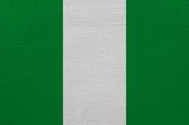

About Me
Hello, my name is Daniel, but I'm commonly known as Khito. I was born in Lagos, Nigeria, but my roots trace back to Imo state, Nigeria. Currently, I work as a freelance software engineer, providing my developing skills to solve real world problems Worldwide. I have a deep passion for programming, mathematics, and music, and I dedicate a significant amount of my time to these areas of interest.
Nigeria

Nigeria is a vibrant and diverse country in West Africa known for its rich culture, ethnic diversity, and bustling cities. With over 200 million people, it is the most populous country in Africa. Nigeria is blessed with abundant natural resources, including oil, natural gas, minerals, and agricultural products. The country's cultural landscape is incredibly diverse, with over 250 ethnic groups, each contributing its own unique traditions, languages, and cuisine. Despite challenges, Nigerians are known for their resilience, warmth, and hospitality. Nigeria continues to make strides in areas such as technology, entrepreneurship, and creative industries.